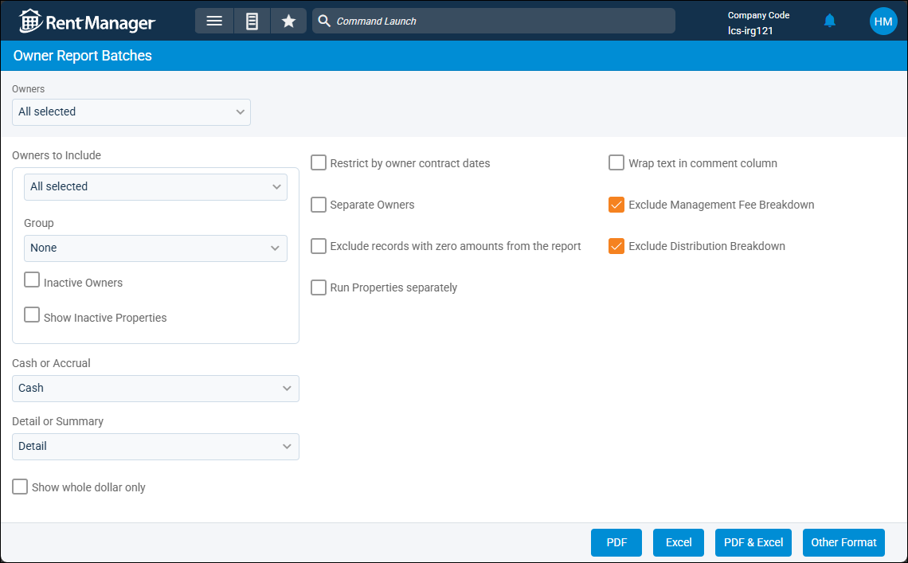

Source: https://rmxhelp.rentmanager.com/Topics/Express/CSH/Owners-Report-Batches.htm
Owner Report Batches (Pop-Up)
The Owner Report Batches page allows you to generate the default report batch for all your owners at once. The batch that runs from this page is the batch designated as the Default owner report batch in system preferences. However, if you selected a different default batch for a specific owner on the owner's details page, then that particular batch runs for that specific owner.
Unlike other report batches, the Owner Report Batches cannot be scheduled and sent automatically; instead, it must be manually run and sent or published to Owner Web Access (OWA).
Related Privileges
| Group | Privilege | Column |
|---|---|---|
| Owners | Owners | View, Edit |
| Letter/Email Templates/Reports/Packets | Run reports | Enabled |
| Run accounting reports | Enabled |
Additionally, on the Reports tab, you must have access to the corresponding reports you wish to add to the batch.
For more information, refer to Control User Access.
To view the Owner Report Batches page, go to  arrow_forward
arrow_forward  Owner Report Batches.
Owner Report Batches.

Report Parameters
When you initially created the batch, if you selected Ask for any of the report options for the reports you added to the batch, then those questions display on the Owner Report Batches page as parameters you can set. If you did not select Ask for any report options, then the Owner Report Batches page simply prompts you to generate the report in your preferred format.